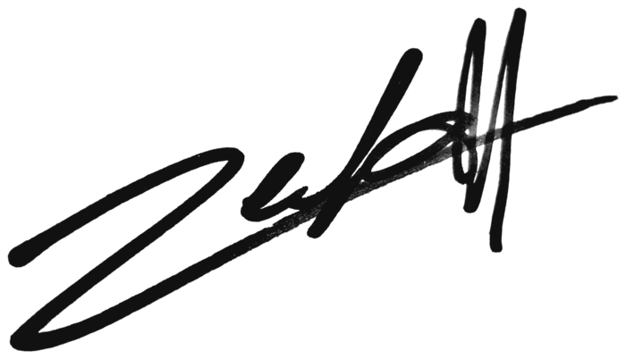
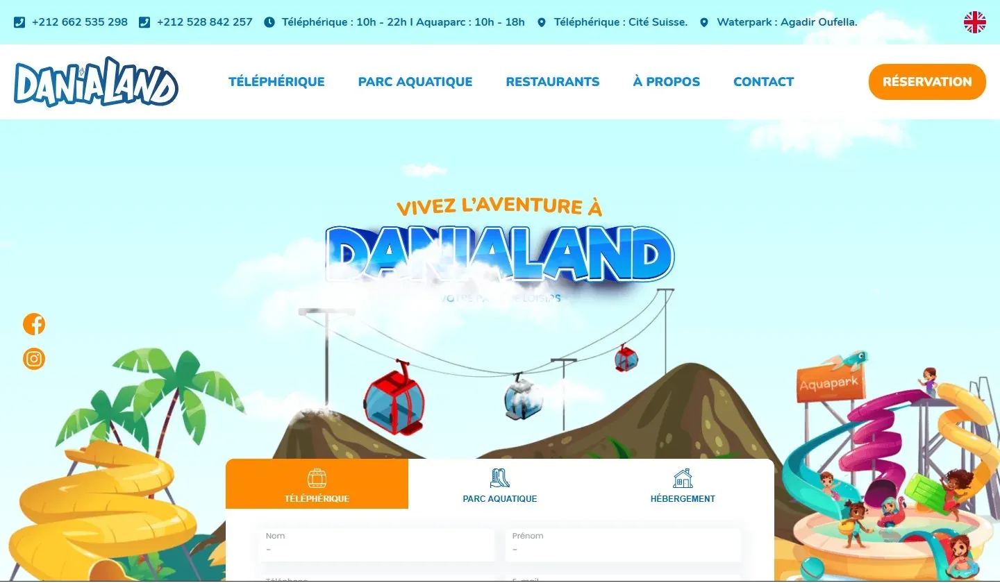
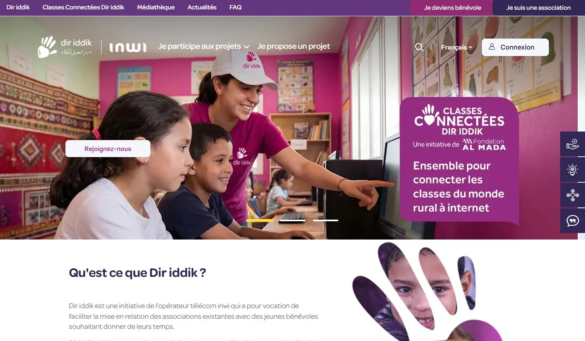

Sites & boutiques
- Sur mesure
- WordPress
- Shopify
Vitrines et boutiques en ligne, pensées pour être trouvées et pour que le visiteur passe à l'action.

SimoJe construisdes applications→ des sites · des boutiques en ligne · des outils internes · des automatisations
Je construisdes applications→ des sites · des boutiques en ligne · des outils internes · des automatisations
05 projets
← glissez →
survol = rayon X

Intégration de contenu, au sein de l'équipe
WordPress et WooCommerce avec réservation en ligne, en trois langues.
Mission freelance · conception et développement
Suit une gymnaste précise parmi d'autres personnes, en direct ou sur vidéo, en local sur le Mac du client.

Contenus et CMS, pas le développement d'origine
Une plateforme Drupal en trois langues qui relie les bénévoles aux associations.
Plus de 70 000 utilisateurs.
Mission longue durée · pipeline de données
Récupère un catalogue produit complet, trie les images et prépare le fichier d'import.
Environ 40 fois plus rapide qu'à la main.
Choisissez une commande : le chiffre s'écrit comme dans un vrai terminal. Chaque chiffre vient d'un projet réel.
04 services
Vitrines et boutiques en ligne, pensées pour être trouvées et pour que le visiteur passe à l'action.
Applications web et mobiles, de l'idée à la mise en ligne, avec leur espace d'administration.
Tableaux de bord et back-offices faits pour votre façon de travailler, pas l'inverse.
Les données circulent, les documents et les rapports se génèrent tout seuls.
Vous m'expliquez le besoin, je vous dis ce qui est faisable.
Ce qui est inclus, le délai et le prix, avant de commencer.
Vous voyez tôt quelque chose qui marche, et on ajuste ensemble.
Vous repartez autonome, et je reste joignable après la mise en ligne.
J'ai étudié l'économie et la gestion, puis j'ai passé deux ans à faire tourner une plateforme nationale pour un opérateur télécom. C'est là que j'ai vu ce qui coûte vraiment du temps dans une entreprise.
Ensuite je suis passé à la construction : Python d'abord, puis le web et les applications. Je travaille à distance, en français, en anglais ou en arabe.
Dites-moi quelle tâche vous coûte le plus de temps. Je vous réponds sous 24 heures.